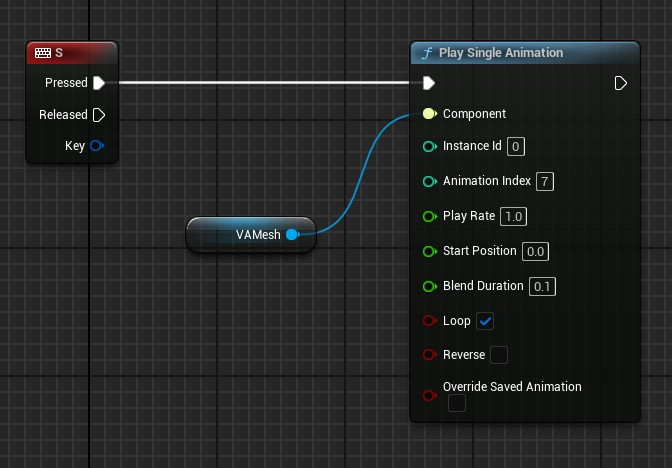
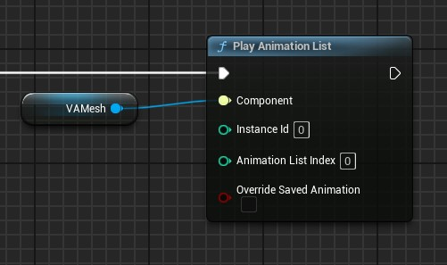
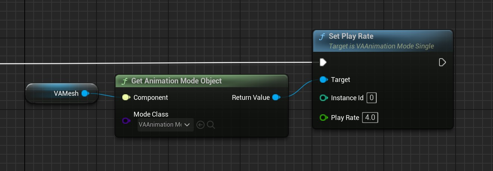
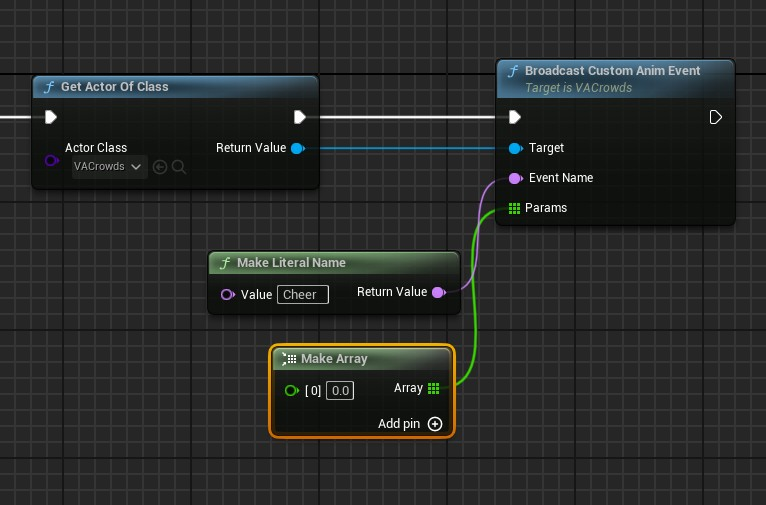
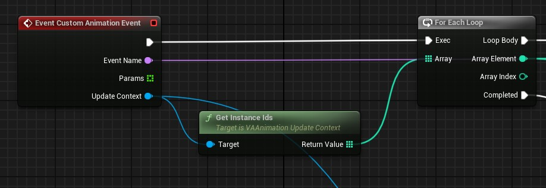

Animation Control
The Vertex Animation Studio provides helper functions that automatically manage animation modes and provide consistent control whether you're working with single characters or crowds.
Architecture Overview
The animation system operates through two distinct modes managed by the Animation Mode Manager:
- Single Mode: Direct control of individual animations
- AnimList Mode: List-based animation sequences
Single Animation Mode
Single Mode provides direct, precise control over animations. When you call
PlaySingleAnimation, the system:
- Automatically switches the instances to Single Mode
- Starts the specified animation immediately
- Maintains this mode until you call a different animation function

The
PlaySingleAnimationfunction accepts:
- Animation: The specific animation from the VA Asset Collection
- Instance ID / Instance IDs: Single instance or array of instances to affect
- Play Rate: Animation speed multiplier
- Start Position: Where to start in the animation (0-1)
- Blend Duration: Time to blend from current animation
- Loop: Whether to loop the animation
- Reverse: Play the animation backwards
- Override Saved Animation: When true, saves this animation state to the level so it persists across editor sessions and plays automatically on level load
All Available Functions
Core functions available in Single Mode:
PlaySingleAnimation: Start a specific animationStopAnimation: Stop the current animationPauseAnimation: Pause/resume playbackSetAnimationTime: Jump to a specific pointSetAnimationSpeed: Adjust playback rateGetCurrentAnimation: Query what's playing
Animation List Mode
AnimList Mode enables complex animation behaviors through Animation Lists. When you call
PlayAnimationList, the system:
- Automatically switches the instances to AnimList Mode
- Activates the specified Animation List
- The list's logic takes control of animation playback

The
PlayAnimationListfunction accepts:
- Instance ID / Instance IDs: Single instance or array of instances to affect
- Animation List Index: Which list slot to use in the component (the Animation List object must be pre-configured in the component at this index)
- Override Saved Animation: When true, saves this list assignment to the level so it persists across editor sessions and plays automatically on level load
Direct Mode Object Access

For advanced control, you can get the animation mode object directly and call functions on specific instances:
Getting Mode Objects
Use these functions from the VA Component to access mode objects directly:
GetAnimationModeObjectwithVAAnimationMode_Singleclass - Returns the Single Mode object for direct function callsGetAnimationModeObjectwithVAAnimationMode_AnimListclass - Returns the AnimList Mode object for direct function callsGetAnimationModeObjectForInstancewith an Instance ID - Returns the mode object currently controlling that specific instance
Direct Function Calls
Once you have a mode object, you can call functions directly on specific instances:
Single Mode Functions:
SetPlayRate: Change animation speed for specific instancesSetPosition: Jump to specific animation positionsPause/Resume: Control playback state per instanceSetReverse: Change animation direction for instancesStepForward/StepBackward: Frame-by-frame control
AnimList Mode Functions:
ChangeInstanceList: Switch instances to different animation listsGetInstanceList: Query which list an instance is currently usingGetInstancesInList: Get all instances using a specific animation listGetInstanceListObject: Get the Animation List object for an instanceGetAnimationListCollection: Access the collection of available animation lists
This approach provides the most granular control over individual instances and their animation behavior.
Events and the Crowd System
The animation system includes a robust event system that's particularly powerful when used with the Crowd Tools. Events can be broadcast to all instances or specific subsets of your crowd, allowing you to make crowds react dynamically to gameplay events, level changes, or player actions.
Broadcasting Events
For Crowd Systems: Events are broadcast through the AVACrowds parent actor to all crowd instances:

For Non-Crowd Systems: If you're using VA Mesh Component without the crowd tools, you'll need to implement your own event system to communicate with your Animation Lists.
Event Handling in Animation Lists
Custom Animation Lists receive events by overriding the
CustomAnimationEventfunction. Here's an example:

See Also
- Custom Animation Lists - Create custom animation behaviors
- VA Mesh Component - Single character setup
- VA Instanced Mesh Component - Crowd setup
- Crowd Tools - Placement and management